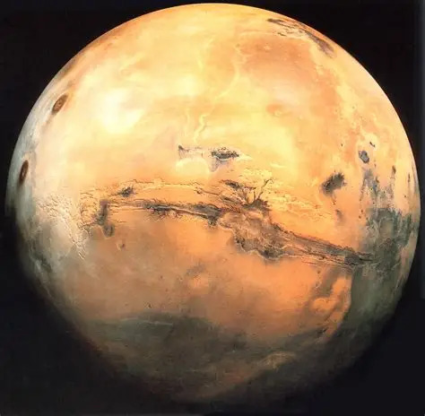
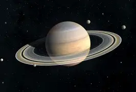
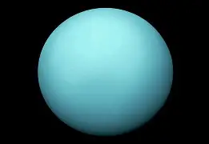

Mars is the fourth planet from the Sun and is often called the
“Red Planet” because of its reddish appearance. The red color
comes from iron oxide, or rust, that covers much of its surface.
Mars has fascinated scientists and astronomers for many years
because it is one of the most Earth-like planets in our solar system.

Saturn is the sixth planet from the Sun and is best known for its
beautiful and bright ring system. It is the second-largest planet
in our solar system, after Jupiter. Saturn is a gas giant, which means
it is made mostly of hydrogen and helium instead of solid rock like Earth.
Learn More

Uranus is the seventh planet from the Sun and is known for its pale blue-green
color. It is one of the largest planets in our solar system and is classified
as an ice giant. Unlike rocky planets such as Earth and Mars, The methane
in its atmosphere gives Uranus its blue color by absorbing red light and
reflecting blue light.
Learn More

Earth is the only known planet in the universe that supports life. It is a unique blend of land, water, and atmosphere, providing the perfect conditions for plants, animals, and humans to thrive. From the vast oceans to the towering mountains, Earth’s landscapes are diverse and breathtaking.

Venus is the second planet from the Sun and Earth's closest neighbors,
often called it's "twin" due to similar size, mass, and rocky composition.
Despite similarities, it is a hellish, uninhabitable world with a thick carbon
dioxide atmosphere, sulfuric acid clouds, and surfaced temperature over
460C-860F-hot enough to melt lead. Venus is also a terrestial planet. It is small and rocky.
The clouds in Venus are color yellow.

Jupiter is solar system's largest plant, with over twice the mass of all other planets combined over 90 moons, including Ganymede, the largest moon in the solar system. Jupiter is also the fifth from the sun referred to as "gas giant" or the "king of the planets". It is massive, stormy world composed primarily of hydrogen and helium, featuring a distinctive, colorful atmosphere and a rapidly rotating and a non-solid surface.
Learn More
Neptune is the eighth and farthest planet from the Sun in our solar system. Known as an “icegiant,” Neptune is composed mainly of hydrogen, helium, water, and other ices, giving it astriking deep blue color. It was discovered in 1846 and named after the Roman god of the sea,which suits its appearance.
Learn More